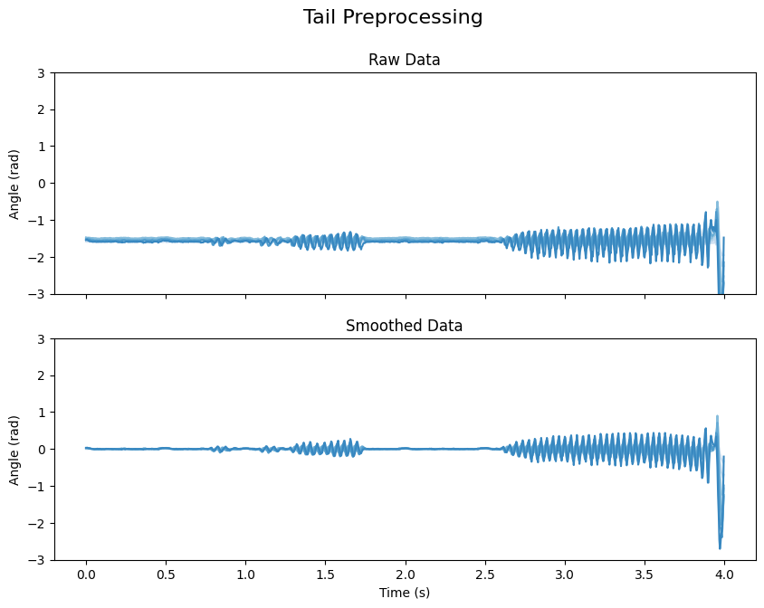
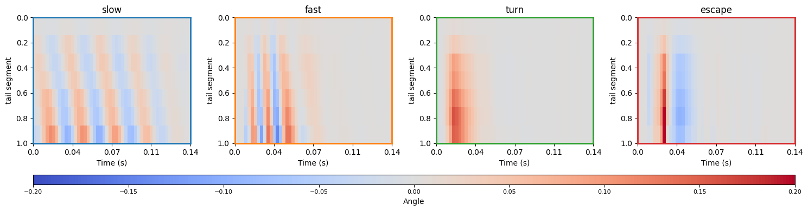
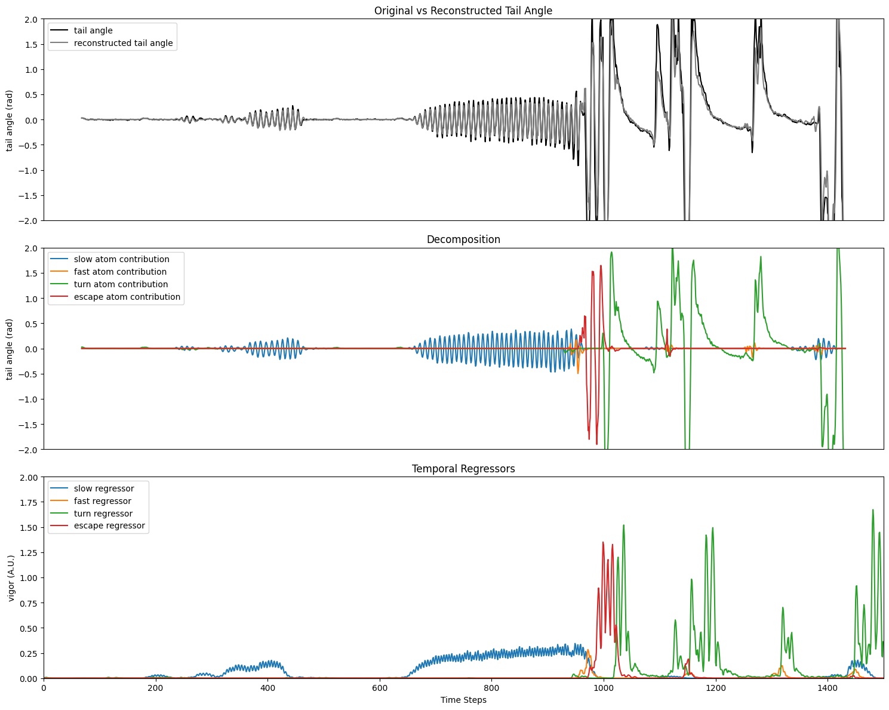

%load_ext autoreload
%autoreload 2
import numpy as np
import matplotlib.pyplot as plt
import matplotlib.gridspec as gridspec
from cycler import cycler
from megabouts.tracking_data import TrackingConfig, TailTrackingData, load_example_data
from megabouts.pipeline import HeadRestrainedPipeline
---------------------------------------------------------------------------
ModuleNotFoundError Traceback (most recent call last)
Cell In[2], line 7
4 from cycler import cycler
6 from megabouts.tracking_data import TrackingConfig, TailTrackingData, load_example_data
----> 7 from megabouts.pipeline import HeadRestrainedPipeline
File /opt/hostedtoolcache/Python/3.10.15/x64/lib/python3.10/site-packages/megabouts/pipeline/__init__.py:3
1 from .freely_swimming_pipeline import EthogramHeadTracking, HeadTrackingPipeline
2 from .freely_swimming_pipeline import EthogramFullTracking, FullTrackingPipeline
----> 3 from .head_restrained_pipeline import HeadRestrainedPipeline
6 __all__ = [
7 "EthogramHeadTracking",
8 "HeadTrackingPipeline",
(...)
11 "FullTrackingPipeline",
12 ]
File /opt/hostedtoolcache/Python/3.10.15/x64/lib/python3.10/site-packages/megabouts/pipeline/head_restrained_pipeline.py:9
5 from ..segmentation.segmentation import Segmentation
8 from ..config.sparse_coding_config import SparseCodingConfig
----> 9 from ..sparse_coding.sparse_coding import SparseCoding
11 from ..pipeline.base_pipeline import Pipeline
14 class HeadRestrainedPipeline(Pipeline):
ModuleNotFoundError: No module named 'megabouts.sparse_coding'
df_recording, fps, mm_per_unit = load_example_data("HR_DLC")
df_recording = df_recording["DLC_resnet50_Zebrafish"]
tracking_cfg = TrackingConfig(fps=fps, tracking="tail_tracking")
kpts_list = [f"tail{i}" for i in range(11)]
thresh_score = 0.99
for kps in kpts_list:
df_recording.loc[df_recording[(kps, "likelihood")] < thresh_score, (kps, "x")] = (
np.nan
)
df_recording.loc[df_recording[(kps, "likelihood")] < thresh_score, (kps, "y")] = (
np.nan
)
tail_x = df_recording.loc[
:,
[
(segment, "x")
for segment, coord in df_recording.columns
if segment in kpts_list and coord == "x"
],
].values
tail_y = df_recording.loc[
:,
[
(segment, "y")
for segment, coord in df_recording.columns
if segment in kpts_list and coord == "y"
],
].values
tail_x = tail_x * mm_per_unit
tail_y = tail_y * mm_per_unit
tracking_data = TailTrackingData.from_keypoints(tail_x=tail_x, tail_y=tail_y)
pipeline = HeadRestrainedPipeline(tracking_cfg)
tail = pipeline.preprocess_tail(tracking_data.tail_df)
tail.angle_smooth.shape
(69997, 10)
tail.df
| angle | ... | angle_smooth | vigor | no_tracking | |||||||||||||||||
|---|---|---|---|---|---|---|---|---|---|---|---|---|---|---|---|---|---|---|---|---|---|
| segments | ... | segments | |||||||||||||||||||
| 0 | 1 | 2 | 3 | 4 | 5 | 6 | 7 | 8 | 9 | ... | 2 | 3 | 4 | 5 | 6 | 7 | 8 | 9 | |||
| 0 | -1.593780 | -1.568089 | -1.530709 | -1.495834 | -1.535778 | -1.561335 | -1.570016 | -1.542794 | -1.590044 | -1.845688 | ... | -0.019920 | -0.018788 | -0.025091 | -0.024680 | -0.024461 | -0.015693 | -0.060730 | -0.162884 | NaN | False |
| 1 | -1.605604 | -1.571542 | -1.526480 | -1.489052 | -1.530341 | -1.564532 | -1.583597 | -1.534330 | -1.586708 | -1.793293 | ... | -0.016926 | -0.017747 | -0.021643 | -0.029122 | -0.024312 | -0.020969 | -0.048719 | -0.114415 | NaN | False |
| 2 | -1.610752 | -1.567944 | -1.533597 | -1.493306 | -1.531023 | -1.556587 | -1.582286 | -1.544526 | -1.581794 | -1.803312 | ... | -0.017876 | -0.018538 | -0.022782 | -0.029019 | -0.024678 | -0.020618 | -0.051195 | -0.122257 | NaN | False |
| 3 | -1.608677 | -1.570458 | -1.530129 | -1.493380 | -1.488635 | -1.596988 | -1.586967 | -1.540502 | -1.579036 | -1.771075 | ... | -0.012643 | -0.014796 | -0.018671 | -0.033725 | -0.029629 | -0.030660 | -0.045235 | -0.086734 | NaN | False |
| 4 | -1.609270 | -1.569176 | -1.530705 | -1.498431 | -1.536395 | -1.553538 | -1.579963 | -1.538078 | -1.582147 | -1.779043 | ... | -0.020066 | -0.021864 | -0.022437 | -0.029516 | -0.018789 | -0.019134 | -0.046984 | -0.099571 | NaN | False |
| ... | ... | ... | ... | ... | ... | ... | ... | ... | ... | ... | ... | ... | ... | ... | ... | ... | ... | ... | ... | ... | ... |
| 69992 | -1.596768 | -1.567162 | -1.534361 | -1.507691 | -1.551978 | -1.564608 | -1.582628 | -1.563136 | -1.604771 | -1.873192 | ... | -0.000065 | 0.002175 | 0.001811 | 0.006580 | -0.002728 | -0.008970 | -0.068177 | -0.166427 | NaN | False |
| 69993 | -1.600411 | -1.565543 | -1.530869 | -1.509381 | -1.550250 | -1.563592 | -1.585686 | -1.553040 | -1.603318 | -1.861212 | ... | 0.000263 | 0.002462 | 0.002764 | 0.007294 | -0.000236 | -0.005995 | -0.062282 | -0.156202 | NaN | False |
| 69994 | -1.600256 | -1.571034 | -1.531447 | -1.503754 | -1.552670 | -1.562476 | -1.582733 | -1.558143 | -1.602216 | -1.864465 | ... | 0.000546 | 0.002881 | 0.003148 | 0.007805 | -0.000323 | -0.006426 | -0.063774 | -0.158878 | NaN | False |
| 69995 | -1.603002 | -1.563868 | -1.534452 | -1.505841 | -1.548606 | -1.563429 | -1.581956 | -1.568404 | -1.608382 | -1.886405 | ... | 0.001283 | 0.004120 | 0.003281 | 0.008480 | -0.003791 | -0.011117 | -0.074538 | -0.178609 | NaN | False |
| 69996 | -1.599015 | -1.556858 | -1.547860 | -1.498510 | -1.540778 | -1.560287 | -1.586371 | -1.569548 | -1.601050 | -1.874752 | ... | 0.004561 | 0.007551 | 0.005944 | 0.008712 | -0.004816 | -0.011237 | -0.068135 | -0.167194 | NaN | False |
69997 rows × 32 columns
blue_cycler = cycler(color=plt.cm.Blues(np.linspace(0.2, 0.9, 10)))
t = np.arange(tracking_data.T) / tracking_cfg.fps
IdSt = 36000 # np.random.randint(tracking_data.T)
Duration = 1000
t_win = t[IdSt : IdSt + Duration] - t[IdSt]
# Prepare the data, titles, and subtitles
angle_data = [tail.angle, tail.angle_smooth]
subtitles = ["Raw Data", "Smoothed Data"]
# Create subplots
fig, ax = plt.subplots(2, 1, figsize=(10, 7), sharex=True)
# Set a main title for the figure
fig.suptitle("Tail Preprocessing", fontsize=16)
# Loop over the axes, data, and subtitles
for axis, data, subtitle in zip(ax, angle_data, subtitles):
axis.set_prop_cycle(blue_cycler)
axis.plot(t_win, data[IdSt : IdSt + Duration, :7])
axis.set(ylabel="Angle (rad)", ylim=(-3, 3))
axis.set_title(subtitle, fontsize=12)
ax[-1].set_xlabel("Time (s)")
plt.show()

pipeline.sparse_coding_cfg
SparseCodingConfig(fps=250, lmbda=0.01, gamma=0.01, mu=0.05, window_inhib_ms=85, dict_peak_ms=28, vigor_win_ms=30)
pipeline.sparse_coding_cfg.Dict.shape
(50, 7, 4)
sparse_coding_result = pipeline.compute_sparse_coding(tail.angle_smooth)
Itn Fnc DFid Regℓ1 RegLat RegSelf r s ρ
------------------------------------------------------------------------------------
0 3.37e+02 2.56e+02 1.28e+03 1.24e+03 6.43e+02 4.41e-01 1.96e+01 1.50e+00
1 3.91e+02 1.17e+02 1.54e+03 4.69e+03 2.40e+03 2.08e-01 3.08e+00 1.50e+00
2 4.49e+02 1.05e+02 1.71e+03 5.86e+03 3.31e+03 3.18e-01 5.01e-01 3.80e-01
3 5.14e+02 1.28e+02 1.57e+03 6.58e+03 4.21e+03 2.73e-01 2.85e-01 2.95e-01
4 5.09e+02 1.26e+02 1.35e+03 6.43e+03 4.74e+03 2.26e-01 1.87e-01 2.95e-01
5 5.10e+02 1.39e+02 1.21e+03 6.11e+03 5.26e+03 1.65e-01 1.40e-01 2.95e-01
6 5.01e+02 1.41e+02 1.13e+03 5.78e+03 6.01e+03 1.30e-01 1.06e-01 2.95e-01
7 4.93e+02 1.46e+02 1.06e+03 5.42e+03 6.49e+03 1.07e-01 9.05e-02 2.95e-01
8 4.80e+02 1.49e+02 1.03e+03 5.02e+03 7.03e+03 8.63e-02 7.90e-02 2.95e-01
9 4.73e+02 1.52e+02 1.00e+03 4.70e+03 7.65e+03 7.28e-02 7.27e-02 2.95e-01
10 4.63e+02 1.52e+02 9.77e+02 4.38e+03 8.21e+03 5.94e-02 6.33e-02 2.95e-01
11 4.54e+02 1.53e+02 9.61e+02 4.11e+03 8.69e+03 5.03e-02 5.60e-02 2.95e-01
12 4.43e+02 1.52e+02 9.54e+02 3.81e+03 9.14e+03 4.25e-02 5.17e-02 2.95e-01
13 4.33e+02 1.51e+02 9.48e+02 3.54e+03 9.51e+03 4.06e-02 4.80e-02 2.60e-01
14 4.27e+02 1.51e+02 9.46e+02 3.37e+03 9.89e+03 4.14e-02 4.58e-02 2.33e-01
15 4.22e+02 1.50e+02 9.49e+02 3.19e+03 1.03e+04 3.93e-02 4.40e-02 2.33e-01
16 4.15e+02 1.49e+02 9.47e+02 3.02e+03 1.06e+04 3.63e-02 4.18e-02 2.33e-01
17 4.08e+02 1.49e+02 9.45e+02 2.85e+03 1.08e+04 3.57e-02 3.89e-02 2.11e-01
18 4.04e+02 1.48e+02 9.46e+02 2.73e+03 1.10e+04 3.42e-02 3.68e-02 2.11e-01
19 3.98e+02 1.48e+02 9.46e+02 2.57e+03 1.12e+04 3.23e-02 3.64e-02 2.11e-01
20 3.91e+02 1.47e+02 9.44e+02 2.41e+03 1.14e+04 2.97e-02 3.35e-02 2.11e-01
21 3.87e+02 1.47e+02 9.43e+02 2.31e+03 1.15e+04 2.70e-02 3.19e-02 2.11e-01
22 3.81e+02 1.47e+02 9.44e+02 2.18e+03 1.16e+04 2.70e-02 3.06e-02 1.89e-01
23 3.78e+02 1.46e+02 9.47e+02 2.09e+03 1.18e+04 2.59e-02 2.94e-02 1.89e-01
24 3.72e+02 1.46e+02 9.47e+02 1.97e+03 1.19e+04 2.42e-02 2.88e-02 1.89e-01
25 3.68e+02 1.46e+02 9.47e+02 1.87e+03 1.19e+04 2.50e-02 2.84e-02 1.69e-01
26 3.63e+02 1.45e+02 9.49e+02 1.77e+03 1.20e+04 2.42e-02 2.77e-02 1.69e-01
27 3.61e+02 1.45e+02 9.52e+02 1.72e+03 1.21e+04 2.51e-02 2.80e-02 1.54e-01
28 3.59e+02 1.45e+02 9.54e+02 1.66e+03 1.21e+04 2.44e-02 2.82e-02 1.54e-01
29 3.55e+02 1.44e+02 9.57e+02 1.59e+03 1.22e+04 2.54e-02 2.82e-02 1.39e-01
30 3.55e+02 1.44e+02 9.62e+02 1.59e+03 1.22e+04 2.50e-02 2.74e-02 1.39e-01
31 3.53e+02 1.44e+02 9.65e+02 1.55e+03 1.22e+04 2.44e-02 2.69e-02 1.39e-01
32 3.51e+02 1.44e+02 9.63e+02 1.53e+03 1.21e+04 2.29e-02 2.54e-02 1.39e-01
33 3.49e+02 1.43e+02 9.64e+02 1.49e+03 1.21e+04 2.28e-02 2.40e-02 1.39e-01
34 3.48e+02 1.43e+02 9.65e+02 1.48e+03 1.21e+04 2.21e-02 2.42e-02 1.39e-01
35 3.43e+02 1.43e+02 9.62e+02 1.42e+03 1.20e+04 2.08e-02 2.31e-02 1.39e-01
36 3.42e+02 1.43e+02 9.62e+02 1.40e+03 1.19e+04 2.04e-02 2.16e-02 1.39e-01
37 3.41e+02 1.43e+02 9.65e+02 1.39e+03 1.19e+04 1.98e-02 1.99e-02 1.39e-01
38 3.40e+02 1.43e+02 9.67e+02 1.36e+03 1.19e+04 1.90e-02 1.93e-02 1.39e-01
39 3.37e+02 1.43e+02 9.66e+02 1.32e+03 1.18e+04 1.81e-02 1.99e-02 1.39e-01
40 3.33e+02 1.43e+02 9.62e+02 1.26e+03 1.17e+04 1.67e-02 1.93e-02 1.39e-01
41 3.31e+02 1.43e+02 9.63e+02 1.24e+03 1.17e+04 1.72e-02 1.67e-02 1.26e-01
42 3.31e+02 1.43e+02 9.66e+02 1.25e+03 1.17e+04 1.66e-02 1.42e-02 1.26e-01
43 3.30e+02 1.43e+02 9.66e+02 1.23e+03 1.16e+04 1.57e-02 1.37e-02 1.26e-01
44 3.27e+02 1.43e+02 9.66e+02 1.20e+03 1.15e+04 1.49e-02 1.36e-02 1.26e-01
45 3.27e+02 1.43e+02 9.66e+02 1.19e+03 1.15e+04 1.44e-02 1.27e-02 1.26e-01
46 3.24e+02 1.43e+02 9.65e+02 1.14e+03 1.15e+04 1.37e-02 1.25e-02 1.26e-01
47 3.23e+02 1.43e+02 9.65e+02 1.12e+03 1.15e+04 1.29e-02 1.15e-02 1.26e-01
48 3.21e+02 1.43e+02 9.64e+02 1.09e+03 1.14e+04 1.24e-02 1.09e-02 1.26e-01
49 3.17e+02 1.43e+02 9.63e+02 1.04e+03 1.13e+04 1.19e-02 1.11e-02 1.26e-01
50 3.15e+02 1.43e+02 9.63e+02 1.00e+03 1.13e+04 1.15e-02 1.09e-02 1.26e-01
51 3.14e+02 1.43e+02 9.63e+02 9.84e+02 1.13e+04 1.12e-02 1.03e-02 1.26e-01
52 3.12e+02 1.43e+02 9.63e+02 9.49e+02 1.13e+04 1.07e-02 1.00e-02 1.26e-01
53 3.10e+02 1.43e+02 9.62e+02 9.00e+02 1.13e+04 1.03e-02 9.68e-03 1.26e-01
54 3.08e+02 1.43e+02 9.61e+02 8.66e+02 1.12e+04 9.76e-03 9.42e-03 1.26e-01
55 3.06e+02 1.42e+02 9.60e+02 8.36e+02 1.12e+04 9.41e-03 9.29e-03 1.26e-01
56 3.05e+02 1.42e+02 9.60e+02 8.20e+02 1.12e+04 9.15e-03 9.24e-03 1.26e-01
57 3.03e+02 1.42e+02 9.60e+02 7.99e+02 1.12e+04 9.05e-03 8.89e-03 1.26e-01
58 3.02e+02 1.42e+02 9.61e+02 7.81e+02 1.12e+04 8.65e-03 8.45e-03 1.26e-01
59 3.01e+02 1.42e+02 9.60e+02 7.48e+02 1.11e+04 8.48e-03 8.20e-03 1.26e-01
60 2.99e+02 1.42e+02 9.59e+02 7.31e+02 1.11e+04 8.09e-03 7.76e-03 1.26e-01
61 2.97e+02 1.42e+02 9.58e+02 6.93e+02 1.11e+04 7.68e-03 7.38e-03 1.26e-01
62 2.96e+02 1.42e+02 9.58e+02 6.71e+02 1.10e+04 7.38e-03 7.12e-03 1.26e-01
63 2.94e+02 1.42e+02 9.59e+02 6.48e+02 1.10e+04 7.19e-03 6.97e-03 1.26e-01
64 2.94e+02 1.42e+02 9.58e+02 6.34e+02 1.10e+04 7.04e-03 7.00e-03 1.26e-01
65 2.93e+02 1.42e+02 9.58e+02 6.17e+02 1.10e+04 6.73e-03 6.40e-03 1.26e-01
66 2.92e+02 1.42e+02 9.58e+02 6.05e+02 1.10e+04 6.45e-03 6.07e-03 1.26e-01
67 2.90e+02 1.42e+02 9.58e+02 5.82e+02 1.10e+04 6.16e-03 5.98e-03 1.26e-01
68 2.89e+02 1.42e+02 9.58e+02 5.64e+02 1.09e+04 5.94e-03 5.75e-03 1.26e-01
69 2.88e+02 1.42e+02 9.57e+02 5.49e+02 1.09e+04 5.76e-03 5.60e-03 1.26e-01
70 2.87e+02 1.42e+02 9.56e+02 5.28e+02 1.09e+04 5.58e-03 5.67e-03 1.26e-01
71 2.86e+02 1.42e+02 9.56e+02 5.09e+02 1.09e+04 5.44e-03 5.47e-03 1.26e-01
72 2.86e+02 1.42e+02 9.56e+02 4.98e+02 1.09e+04 5.26e-03 5.08e-03 1.26e-01
73 2.85e+02 1.42e+02 9.56e+02 4.88e+02 1.09e+04 5.15e-03 4.98e-03 1.26e-01
74 2.84e+02 1.42e+02 9.57e+02 4.76e+02 1.09e+04 5.07e-03 4.82e-03 1.26e-01
75 2.84e+02 1.42e+02 9.57e+02 4.68e+02 1.09e+04 4.96e-03 4.68e-03 1.26e-01
------------------------------------------------------------------------------------
sparse_coding_result.df
| tail_angle | sparse_code | ... | tail_angle_hat | decomposition | regressor | ||||||||||||||||
|---|---|---|---|---|---|---|---|---|---|---|---|---|---|---|---|---|---|---|---|---|---|
| segments | atoms | ... | segments | atoms | atoms | ||||||||||||||||
| 0 | 1 | 2 | 3 | 4 | 5 | 6 | 0 | 1 | 2 | ... | 5 | 6 | 0 | 1 | 2 | 3 | 0 | 1 | 2 | 3 | |
| 0 | -0.006323 | -0.015340 | -0.019920 | -0.018788 | -0.025091 | -0.024680 | -0.024461 | -0.0 | -0.0 | -0.000000 | ... | -0.011432 | -0.010848 | 0.0 | 0.0 | 0.000000 | 0.0 | NaN | NaN | NaN | NaN |
| 1 | -0.005684 | -0.012486 | -0.016926 | -0.017747 | -0.021643 | -0.029122 | -0.024312 | -0.0 | -0.0 | -0.000000 | ... | -0.022528 | -0.020856 | 0.0 | 0.0 | 0.000000 | 0.0 | NaN | NaN | NaN | NaN |
| 2 | -0.005940 | -0.013239 | -0.017876 | -0.018538 | -0.022782 | -0.029019 | -0.024678 | 0.0 | -0.0 | -0.117597 | ... | -0.023834 | -0.021831 | 0.0 | 0.0 | 0.000738 | 0.0 | NaN | NaN | NaN | NaN |
| 3 | -0.004198 | -0.008695 | -0.012643 | -0.014796 | -0.018671 | -0.033725 | -0.029629 | 0.0 | -0.0 | -0.000000 | ... | -0.023436 | -0.021045 | 0.0 | 0.0 | 0.000910 | 0.0 | 0.0 | 0.0 | 0.004001 | 0.0 |
| 4 | -0.007372 | -0.014885 | -0.020066 | -0.021864 | -0.022437 | -0.029516 | -0.018789 | 0.0 | -0.0 | -0.011923 | ... | -0.022182 | -0.019362 | 0.0 | 0.0 | -0.000373 | 0.0 | 0.0 | 0.0 | 0.006911 | 0.0 |
| ... | ... | ... | ... | ... | ... | ... | ... | ... | ... | ... | ... | ... | ... | ... | ... | ... | ... | ... | ... | ... | ... |
| 69992 | -0.000400 | -0.001988 | -0.000065 | 0.002175 | 0.001811 | 0.006580 | -0.002728 | 0.0 | 0.0 | 0.000000 | ... | -0.000722 | -0.000931 | 0.0 | 0.0 | -0.000931 | 0.0 | 0.0 | 0.0 | 0.001124 | 0.0 |
| 69993 | -0.000393 | -0.001746 | 0.000263 | 0.002462 | 0.002764 | 0.007294 | -0.000236 | 0.0 | -0.0 | 0.000000 | ... | -0.000319 | -0.000469 | 0.0 | 0.0 | -0.000469 | 0.0 | 0.0 | 0.0 | 0.000899 | 0.0 |
| 69994 | -0.000315 | -0.001611 | 0.000546 | 0.002881 | 0.003148 | 0.007805 | -0.000323 | 0.0 | -0.0 | -0.000000 | ... | -0.000317 | -0.000381 | 0.0 | 0.0 | -0.000381 | 0.0 | NaN | NaN | NaN | NaN |
| 69995 | 0.000048 | -0.001269 | 0.001283 | 0.004120 | 0.003281 | 0.008480 | -0.003791 | 0.0 | -0.0 | -0.000000 | ... | -0.000294 | -0.000361 | 0.0 | 0.0 | -0.000361 | 0.0 | NaN | NaN | NaN | NaN |
| 69996 | 0.001322 | 0.001305 | 0.004561 | 0.007551 | 0.005944 | 0.008712 | -0.004816 | 0.0 | -0.0 | -0.000000 | ... | 0.000096 | -0.000102 | 0.0 | 0.0 | -0.000102 | 0.0 | NaN | NaN | NaN | NaN |
69997 rows × 26 columns
# Plot dictionary atoms
Dict = pipeline.sparse_coding_cfg.Dict
fig1 = plt.figure(figsize=(15, 4))
G = gridspec.GridSpec(2, 4, height_ratios=[4, 0.3])
atom_names = ["slow", "fast", "turn", "escape"]
colors = ["tab:blue", "tab:orange", "tab:green", "tab:red"]
for i in range(Dict.shape[-1]):
ax = plt.subplot(G[0, i])
im = ax.imshow(
Dict[:, :, i].T,
aspect="auto",
vmin=-0.2,
vmax=0.2,
cmap=plt.colormaps["coolwarm"].with_extremes(bad=colors[i]),
extent=[0, 100, 1, 0],
)
ax.set_ylabel("tail segment")
ax.set_xticks(np.linspace(0, 100, 5))
ax.set_xticklabels(np.round(np.linspace(0, 100 / 700, 5), 2))
# Add colored border around subplot
for spine in ax.spines.values():
spine.set_edgecolor(colors[i])
spine.set_linewidth(2)
ax.set_xlabel("Time (s)")
ax.set_title(atom_names[i])
# Add colorbar below the plots
cbar_ax = plt.subplot(G[1, :])
cbar = plt.colorbar(im, cax=cbar_ax, orientation="horizontal")
cbar.set_label("Angle", size=10)
cbar.ax.tick_params(labelsize=8)
plt.tight_layout()
plt.show()
# Plot sparse coding analysis
fig2 = plt.figure(figsize=(15, 12))
G = gridspec.GridSpec(3, 1)
t = np.linspace(0, Duration / 700, Duration)
IdSt = 36000
Duration = 1500
IdEd = IdSt + Duration
lim_ampl = 2
ax = plt.subplot(G[0])
ax.plot(
sparse_coding_result.tail_angle[IdSt : IdSt + Duration, 6],
color="k",
label="tail angle",
)
ax.plot(
sparse_coding_result.tail_angle_hat[IdSt : IdSt + Duration, 6],
color="tab:gray",
label="reconstructed tail angle",
)
ax.set_ylim(-lim_ampl, lim_ampl)
ax.get_xaxis().set_ticks([])
ax.set_title("Original vs Reconstructed Tail Angle")
ax.set_ylabel("tail angle (rad)")
ax.legend()
ax = plt.subplot(G[1])
ax.plot(
sparse_coding_result.decomposition[IdSt : IdSt + Duration, :],
label=[f"{name} atom contribution" for name in atom_names],
)
ax.set_ylim(-lim_ampl, lim_ampl)
ax.get_xaxis().set_ticks([])
ax.set_title("Decomposition")
ax.set_ylabel("tail angle (rad)")
ax.legend()
ax = plt.subplot(G[2])
ax.plot(
sparse_coding_result.regressor[IdSt : IdSt + Duration, :],
label=[f"{name} regressor" for name in atom_names],
)
ax.set_ylim(0, 2)
ax.set_xlim(0, Duration)
ax.set_title("Temporal Regressors")
ax.set_xlabel("Time Steps")
ax.set_ylabel("vigor (A.U.)")
ax.legend()
plt.tight_layout()
plt.show()

